Manufacturing
From materials to transformer assembly.
Core processing, coil winding, insulation, drying and final assembly in one manufacturing base.
- Plant area
- 100,000m²
- Large equipment
- 460units
- Test equipment
- 60types
Scale, capacity and equipment in one view.
Transformer production, prefabricated-substation assembly and test resources on one industrial campus.
- Total investment
- ≈ RMB 250mManufacturing-base investment
- Plant area
- 100,000 m²Manufacturing campus
- Production equipment
- 460Large mechanical units / sets
- Test equipment
- 60 typesSupporting test equipment
Explore the manufacturing base by area.
Large transformers, core processing and prefabricated substations each have dedicated production areas.
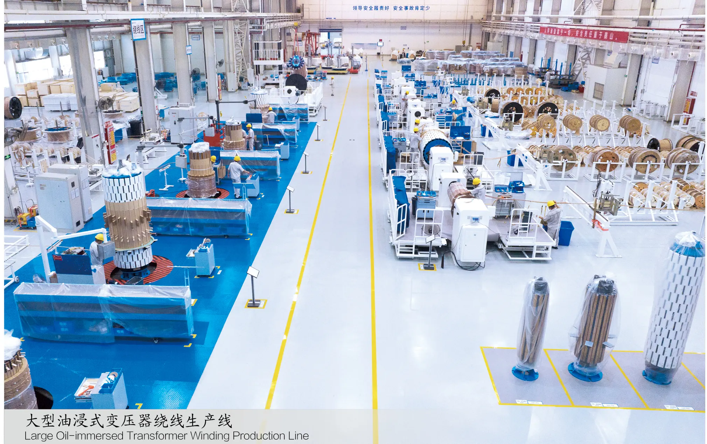
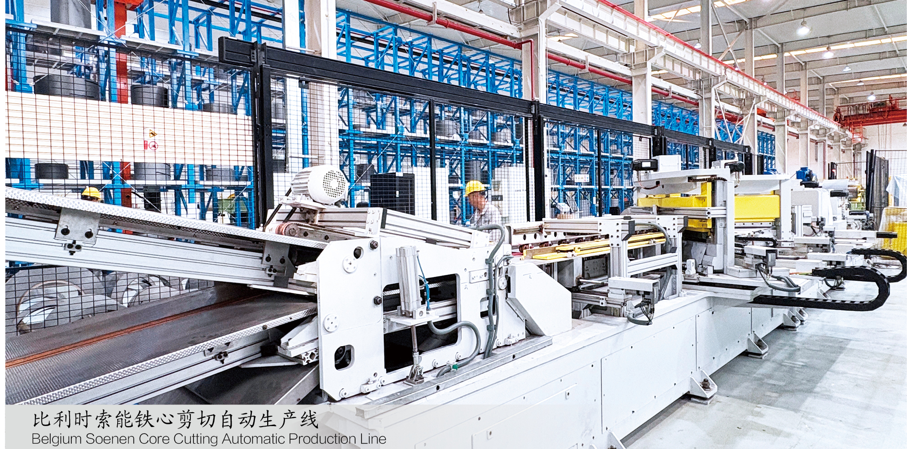

From incoming materials to tested transformer.
Eight stages connect material control, core and coil work, active-part assembly, drying, final assembly and testing.
Material inspection
Incoming conductor, core steel and insulation materials are checked before release to production.
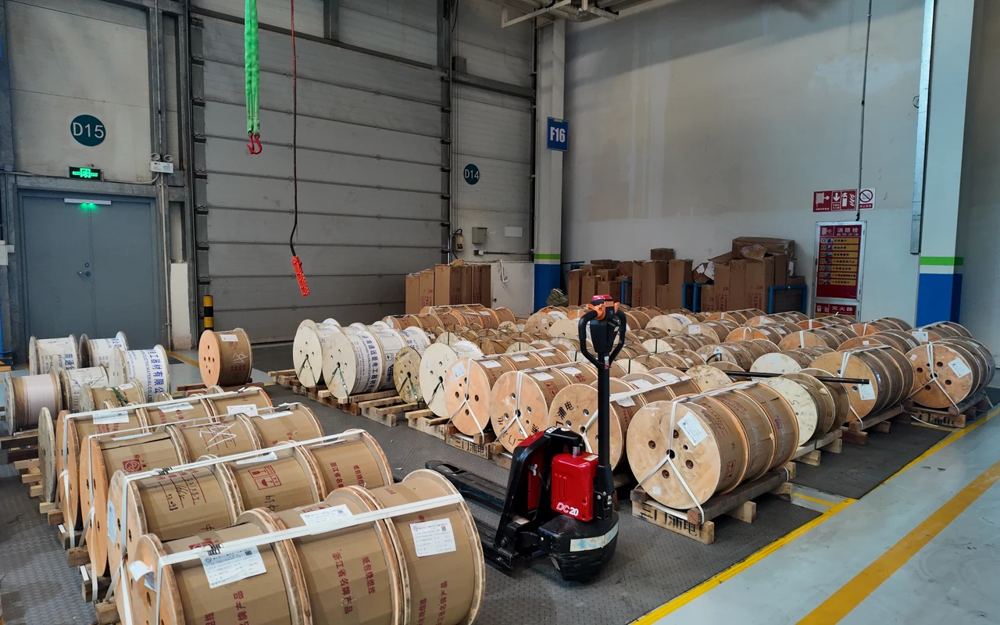
Core cutting
Grain-oriented silicon steel is cut, stacked and dimensionally controlled.
Coil winding
HV and LV windings are wound to the approved design data.
Insulation and leads
Insulation build-up and lead connections to bushings and tap changer.
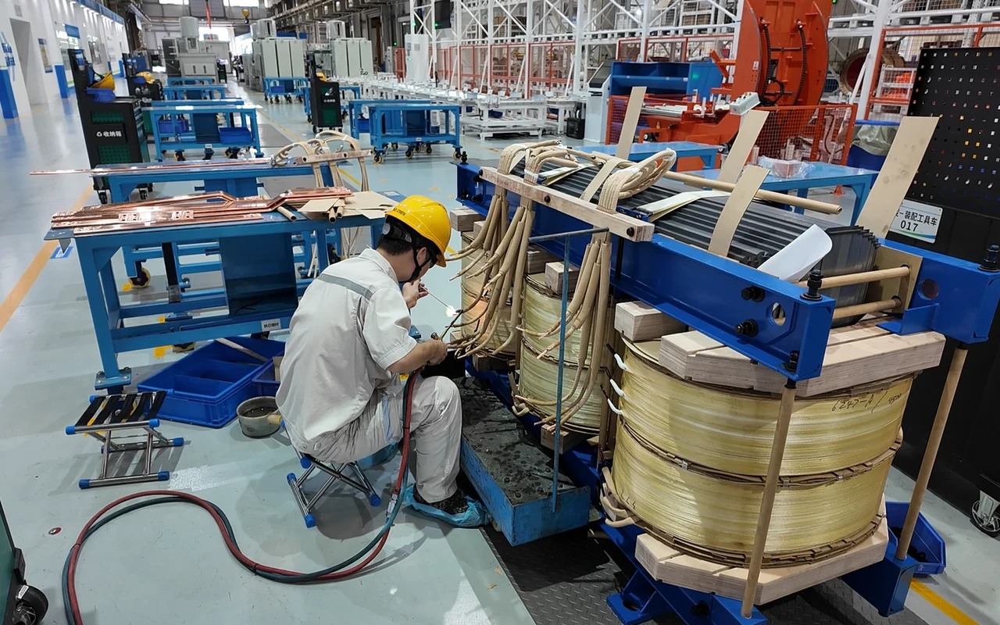
Active-part assembly
Core, coils, leads and clamping structure are integrated.

Vacuum drying
Moisture is removed from the insulation before oil processing and final assembly.
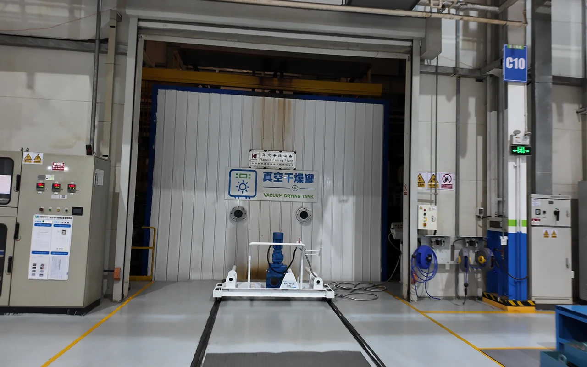
Tanking and final assembly
Tank, radiators, bushings, conservator and accessories are fitted.
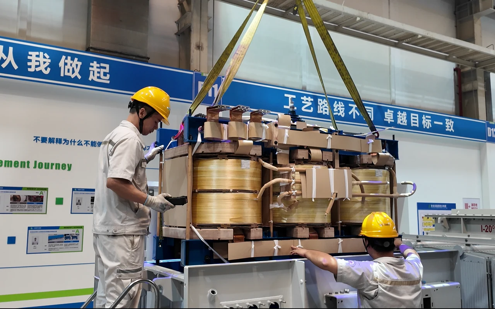
Routine test and FAT
Inspection, agreed testing and release records before shipment.

Supply, production, quality and logistics controls.
SRM, MOM, QMS and WMS support supplier coordination, production execution, quality traceability and material flow.
- SRM · Supplier relationship management
- Supplier coordination, material delivery and procurement collaboration.
- MOM · Manufacturing operations management
- Production planning, process execution and shop-floor coordination.
- QMS · Quality management system
- Quality-control records and traceability through the manufacturing process.
- WMS · Warehouse management system
- Warehouse, inventory and material-flow management.
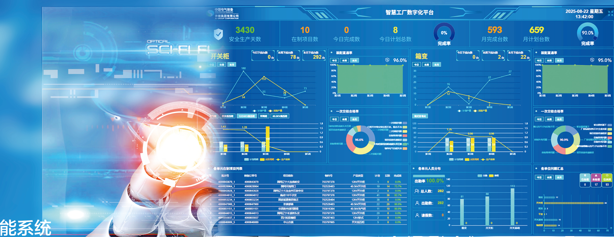
Workshop and assembly.
Photographs from the Tianyu factory gallery.
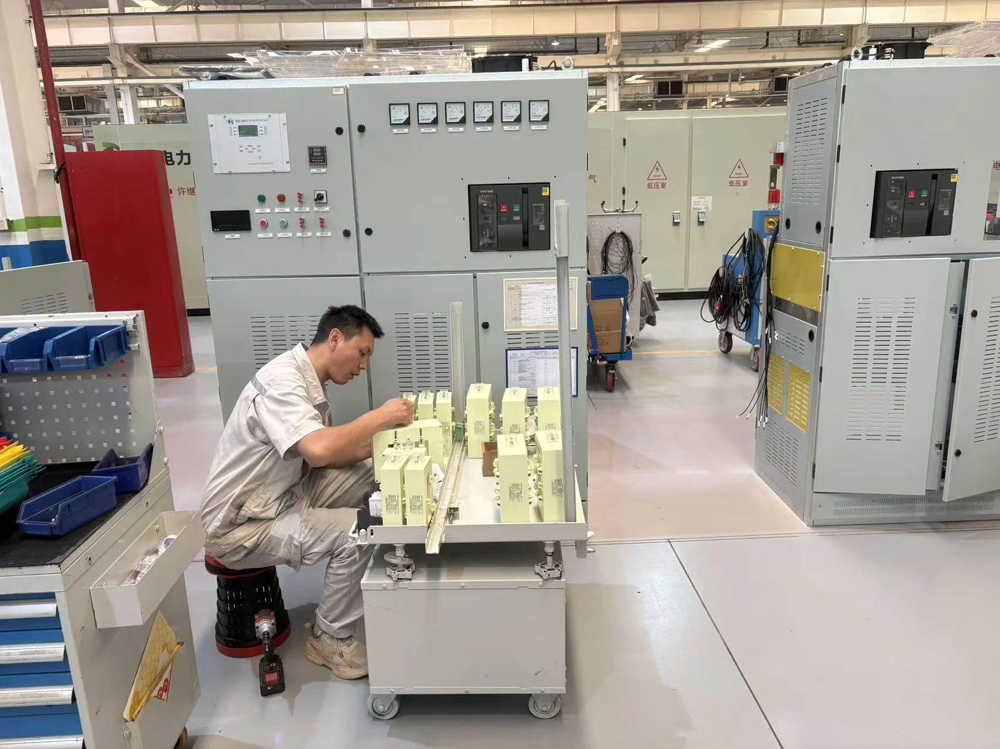
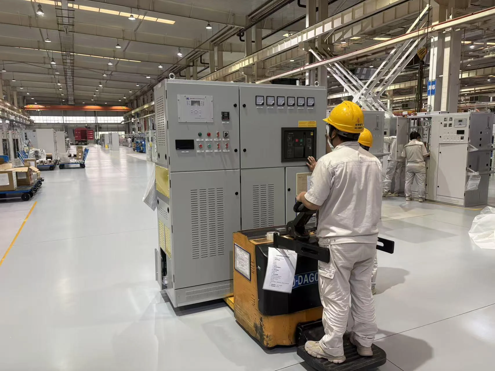

Materials and finished equipment storage.
Dedicated storage areas connect material preparation, switchgear assembly and finished substation staging.
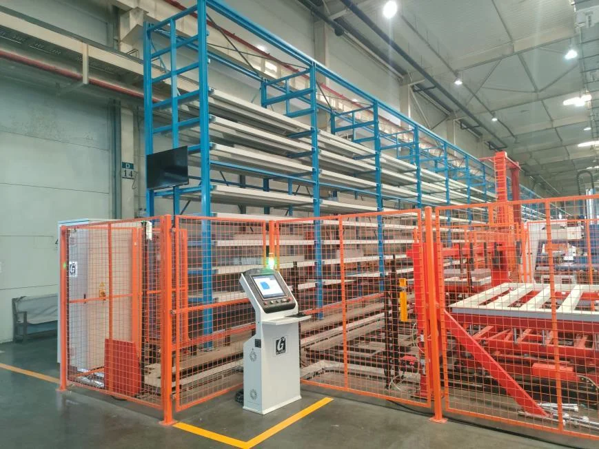


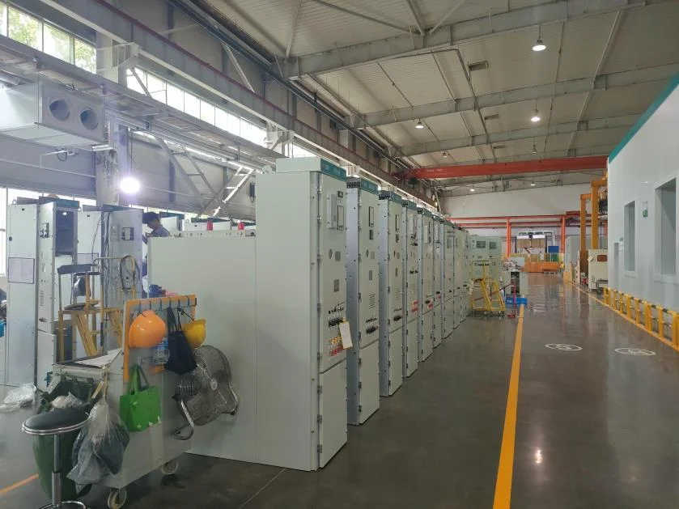
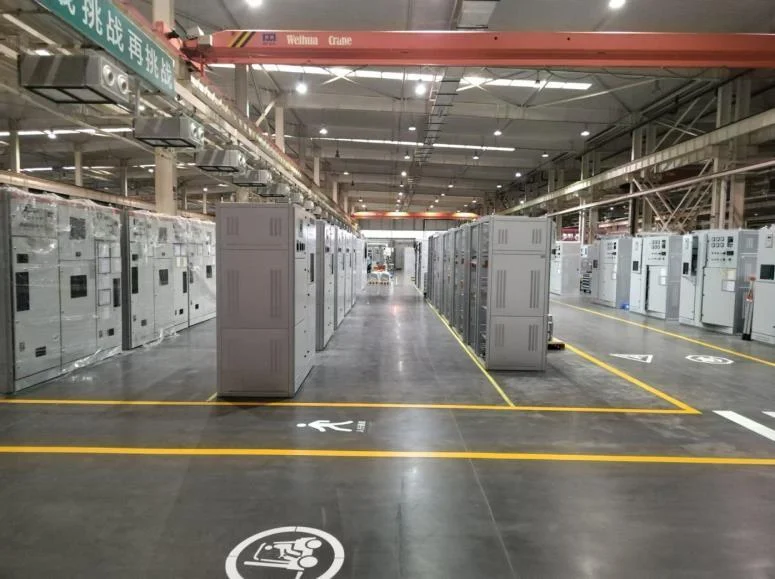

Questions for factory and tender review.
Final scope is governed by the project specification and contract.
Which stages connect materials with final assembly?
Material preparation, core cutting, coil winding, insulation and leads, active-part assembly, drying and tanking form the production sequence.
How are materials and finished equipment organised?
Dedicated areas store sheet metal, components, finished switchgear and prefabricated substations.
Can customers arrange a factory visit?
Share the product range, project stage and visit purpose with the Tianyu team.
Review the manufacturing capability behind your project.
Arrange a factory visit or discuss the inspection and test plan for your specification.